3hree6ix5ive
OldWorlDisorder feat. Eminem
Produced by DJ Spinna
Co-Produced by Skam2?
Shyhalüde / 3hree6ix5ive [Single]
1998
OldWorlDisorder feat. Eminem
Produced by DJ Spinna
Co-Produced by Skam2?
Shyhalüde / 3hree6ix5ive [Single]
1998

Shabaam Sahdeeq feat. Eminem, Skam, Kwest & A.L.
Produced by DJ Spinna
Sound Clash / 5 Star Generals [Single]
1998

Bizarre Kid feat. Eminem & Pacewon
Produced by Denaun Porter
One Sided Demo
1998
Bizarre Kid feat. Eminem, Swift & Fuzz
Produced by DJ Head
One Sided Demo
1998
This is a demo version of a song featured on Slim Shady EP, released earlier in 1997.
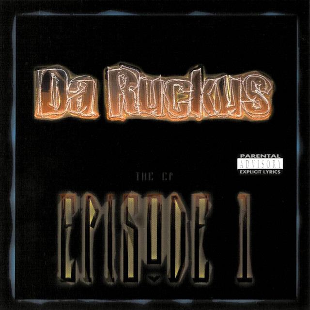
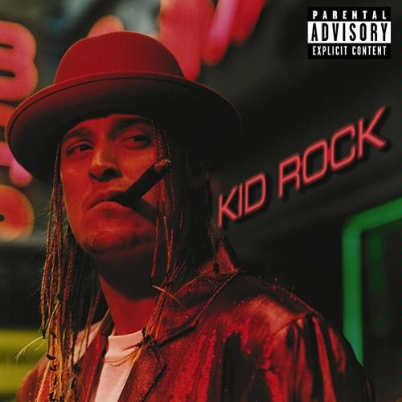

Bizarre with Fuzz & Eminem
Produced by DJ Head
Attack Of The Weirdos [EP]
September 1, 1998
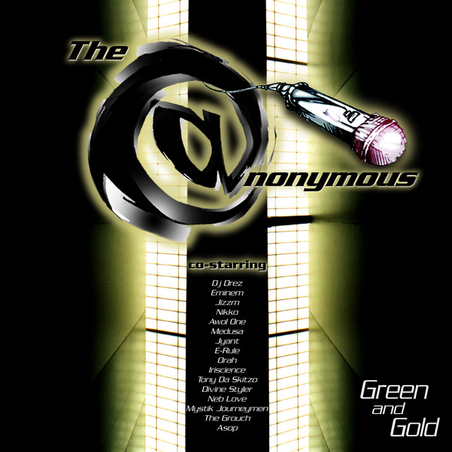
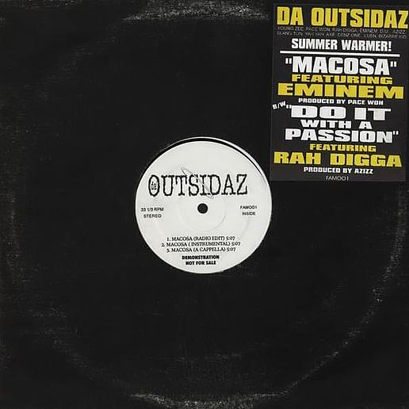
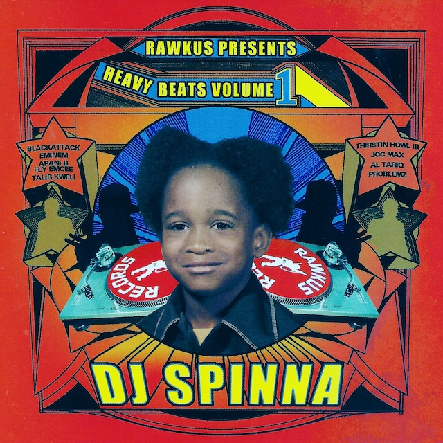
DJ Spinna feat. Thirstin Howl III & Eminem
Produced by DJ Spinna
Rawkus Presents: Heavy Beats Vol. 1
1999
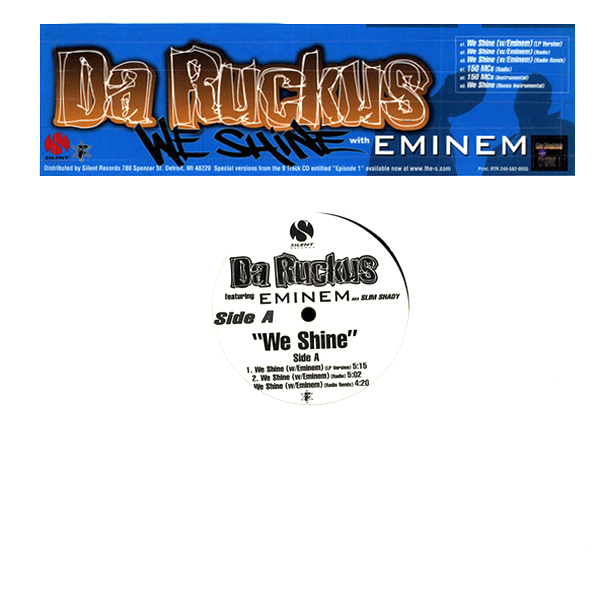
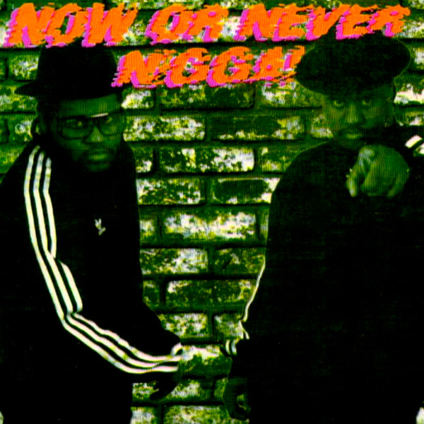
Champtown feat. Eminem & Chaos Kid
Produced by Manix
Now Or Never Nigga!
1999
Recorded in 1992 for Champtown’s unreleased album Crazy Home Escapist.
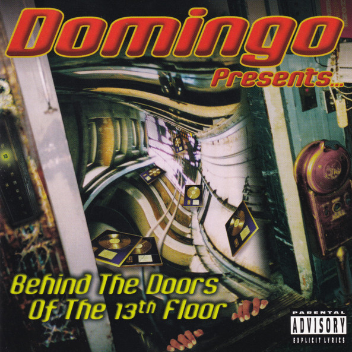
Domingo feat. Feel-X & Eminem
Produced by Domingo
Behind The Doors Of The 13th Floor
March 23, 1999

Sway & King Tech featuring DJ Revolution with RZA, Tech N9ne, Eminem, Xzibit, Pharoahe Monch, Kool G Rap, Jayo Felony, Chino XL & KRS-One
Produced by King Tech
This Or That
May 14, 1999

Sway & King Tech featuring DJ Revolution with Eminem
Produced by DJ Revolution & King Tech
This Or That
June 15, 1999
Later included on The Slim Shady LP (Special Edition) and (Expanded Edition).
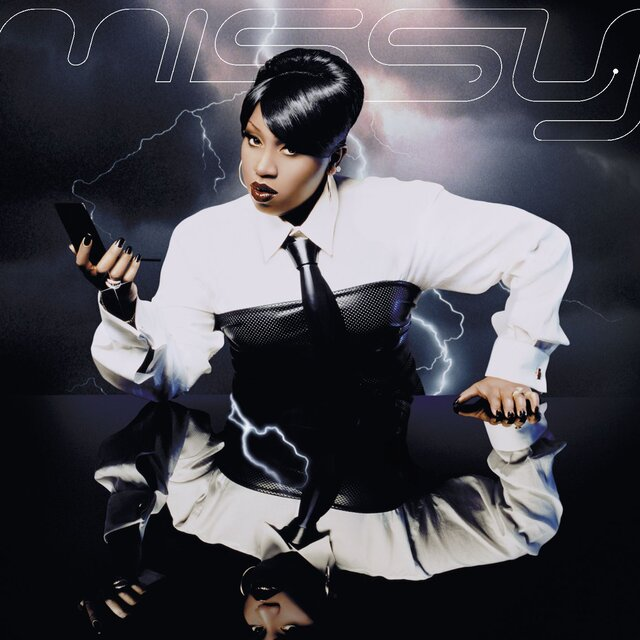
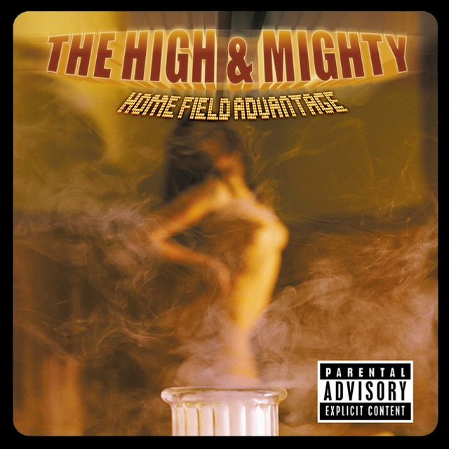
The High & Mighty feat. Eminem
Produced by DJ Mighty Mi
Home Field Advantage
August 24, 1999
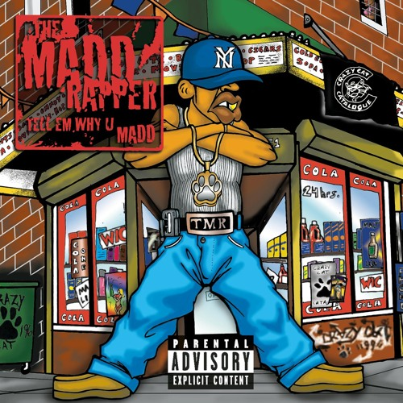
The Madd Rapper feat. Eminem
Produced by Kanye West
Tell ’Em Why U Madd
September 21, 1999
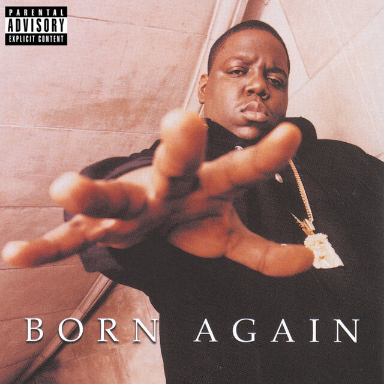
The Notorious B.I.G. feat. Eminem
Produced by Mario Winans & Chucky Thompson
Born Again
October 26, 1999
Later included on Curtain Call: The Hits (Deluxe Edition).

Dr. Dre
Produced by Dr. Dre & Mel-Man
2001
November 16, 1999
Although uncredited, Eminem performs on the chorus.
Dr. Dre feat. Eminem & Xzibit
Produced by Dr. Dre & Mel-Man
2001
November 16, 1999

Funkmaster Flex & Big Kap feat. Dr. Dre & Eminem
Produced by Rockwilder
The Tunnel
December 7, 1999
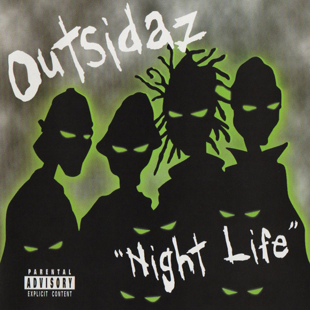
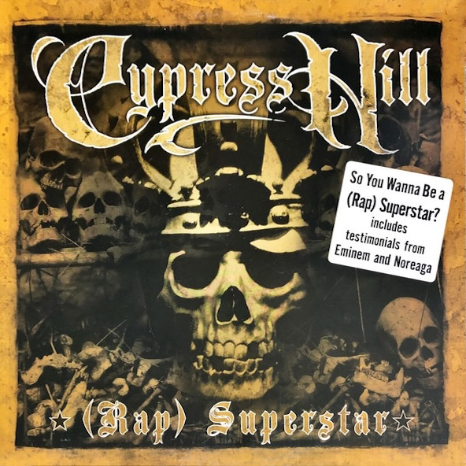
Cypress Hill feat. Eminem & Noreaga
Produced by DJ Muggs
Skull & Bones
February 29, 2000
Eminem and Noreaga are uncredited on physical versions of the song.

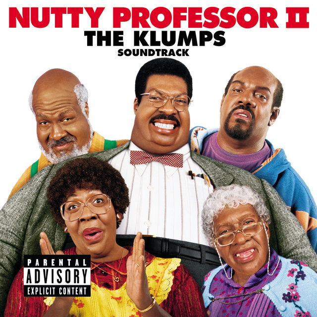
Redman & Eminem
Produced by Erick Sermon
Nutty Professor II: The Klumps (Soundtrack)
July 11, 2000
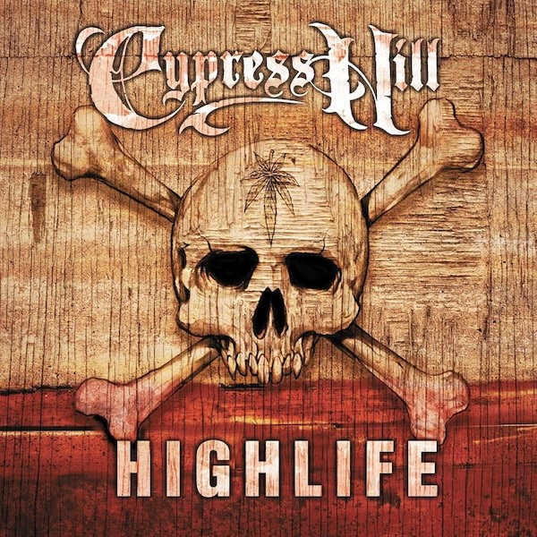
Cypress Hill
Produced by The Alchemist
Highlife [Single]
October 31, 2000
The song was also included on Cypress Hill’s “Can’t Get The Best Of Me” single, which was released simultaneously with their “Highlife” single. Eminem & N.O.R.E. are uncredited.

Funkmaster Flex feat. Eminem & D12
Produced by Eminem & DJ Head
60 Minutes Of Funk, Volume IV: The Mixtape
December 5, 2000
Later included on Devil’s Night (Special Edition), credited solely to D12.


DJ Butter feat. Eminem, Proof, Bugz & Almighty Dreadnaughtz
Produced by DJ Butter
Kill The DJ [Mixtape]
2000
Recorded in 1997. Bugz’s verse was later reused on the D12 World track “Bugz ’97”.
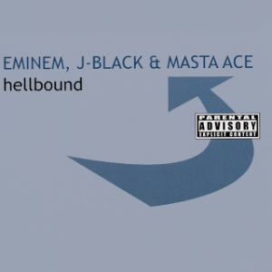
Eminem, J-Black & Masta Ace
Produced by DJ Rob & Domingo
Game Over
2000
Despite giving Eminem main credit, this track was not a direct collaboration. His vocals were lifted from Domingo’s 1999 song “Hustlers & Hardcore,” with “Hellbound” essentially functioning as its remix. Eminem was unaware of its existence until 2008.
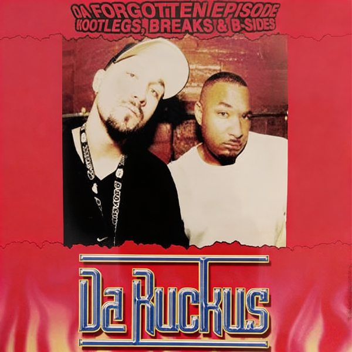
Da Ruckus feat. Eminem
Produced by Hush
Da Forgotten Episode: Bootlegs, Breaks & B-Sides
2000
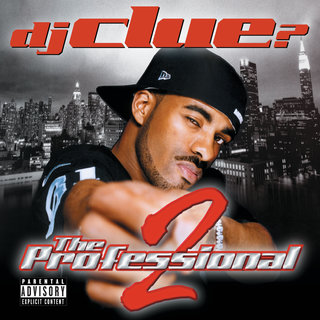
DJ Clue feat. Eminem, Method Man & Royce Da 5’9”
Produced by DJ Clue & Duro
The Professional 2
February 27, 2001
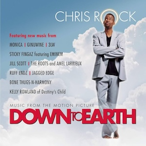
Sticky Fingaz feat. Eminem
Produced by Damon Elliott
Down To Earth (Soundtrack)
February 13, 2001

Jay-Z feat. Eminem
Produced by Eminem
The Blueprint
September 11, 2001
Later included on Curtain Call: The Hits (Deluxe Edition).


Xzibit feat. Eminem & Nate Dogg
Produced by Eminem
Additional Production by Luis Resto
Man Vs. Machine
October 1, 2002
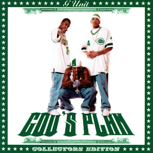
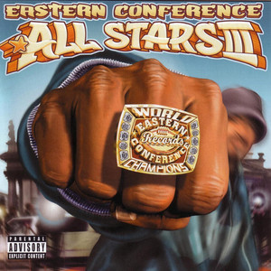
The High & Mighty feat. Eminem
Produced by N/A
Eastern Conference All Stars III
November 15, 2002

Promatic feat. Slim Shady
Produced by Sicknotes
Promatic [Single]
2002
Features uncredited rap vocals by Swifty McVay.
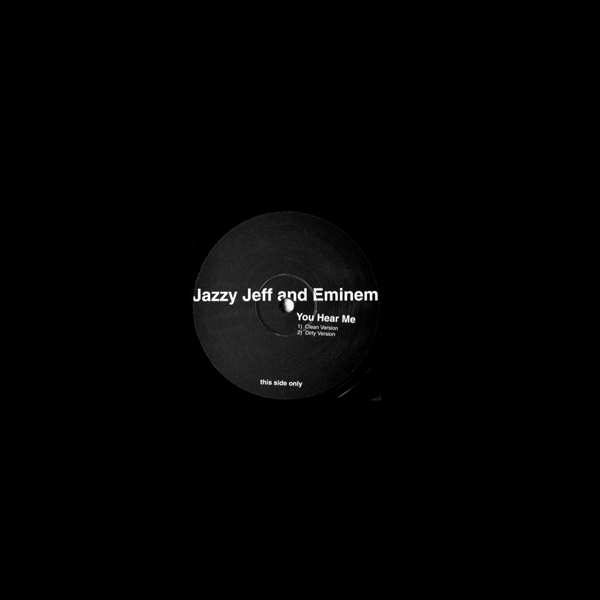
DJ Jazzy Jeff & Eminem
Produced by DJ Jazzy Jeff
You Hear Me [Promo Single]
2002
Recorded in 1998 for DJ Jazzy Jeff’s unreleased Sony album, the track was subsequently self-released after the project was abandoned. Initially titled “When To Stand Up,” it first appeared on Eminem’s official website in 1999 under the title “Go To Hell.” The song also features uncredited rap vocals by Pauly Yamz.

50 Cent feat. Lloyd Banks & Eminem
Produced by Eminem
Get Rich Or Die Tryin’
February 6, 2003

DJ Green Lantern
Produced by N/A
Invasion Part II: Conspiracy Theory [Mixtape]
April 15, 2003
Although uncredited, Eminem performs a skit.
DJ Muggs feat. Eminem, 50 Cent, Lloyd Banks, Tony Yayo & Obie Trice
Produced by Eminem
Invasion Part II: Conspiracy Theory [Mixtape]
April 15, 2003
Originally recorded for DJ Muggs’ album, the track later appeared on Obie Trice’s album Cheers, following the project’s delay.
50 Cent & Eminem
Produced by N/A
Invasion Part II: Conspiracy Theory [Mixtape]
April 15, 2003

50 Cent & Eminem
Produced by N/A
Shady Records Mixtape-CD
April, 2003


Royce Da 5’9” with Eminem
Produced by The Neptunes
Build And Destroy [Mixtape]
June 3, 2003
Royce Da 5’9” feat. Eminem
Produced by Eminem
Build And Destroy [Mixtape]
June 3, 2003
This is the original version of “Renegade” by JAY-Z.

Obie Trice feat. Dr. Dre
Produced by Dr. Dre & Mike Elizondo
Cheers
July 22, 2003
Although uncredited, Eminem performs the chorus.

Obie Trice feat. Eminem
Produced by Eminem
Additional Production by Luis Resto
Cheers
September 23, 2003


![One Day At A Time [Em’s Version] cover](../images/album-covers/feat/2pac-resurrection-cover.jpg)
2Pac with Eminem feat. Outlawz
Produced by Eminem
Tupac: Resurrection (Soundtrack)
November 11, 2003

DJ Kay Slay feat. Eminem & Obie Trice
Produced by Eminem
Additional Production by Luis Resto
The Streetsweeper, Vol. 2: The Pain From The Game
March 30, 2004

Jadakiss feat. Sheek Louch, Styles P & Eminem
Produced by Eminem
Additional Production by Luis Resto
Kiss Of Death
June 22, 2004

Lloyd Banks feat. Eminem, 50 Cent, Nate Dogg
Produced by Eminem
The Hunger For More
June 2004

2Pac feat. Eminem
Produced by Eminem
Additional Production by Luis Resto
Loyal To The Game
December 12, 2004
2Pac feat. Eminem, Kastro & Young Noble
Produced by Eminem
Additional Production by Luis Resto
Loyal To The Game
December 12, 2004

The Game feat. Eminem
Produced by Eminem
Co-Produced by Luis Resto
The Documentary
January 18, 2005


50 Cent feat. Eminem
Produced by Eminem
Additional Production by Mark & Jeff Bass
The Massacre
March 3, 2005
DJ Whoo Kid & Tony Yayo feat. Eminem
Produced by N/A
G-Unit Radio 11: Yayo - Raw-N-Uncut [Mixtape]
May 2005
DJ Whoo Kid & Tony Yayo feat. Eminem
Produced by N/A
G-Unit Radio 11: Yayo - Raw-N-Uncut [Mixtape]
May 2005
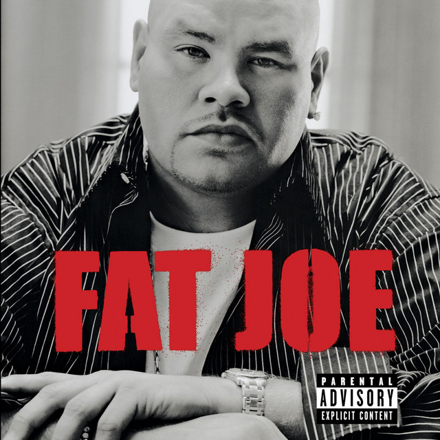
Fat Joe feat. Lil Jon, Eminem, Mase & Remy Ma
Produced by Lil Jon
All Or Nothing
June 14, 2005


Clinton Sparks feat. Eminem & Lil Jon
Produced by N/A
Anger Management 3 [Mixtape]
July 12, 2005
Trick Trick & Eminem
Produced by Eminem
Additional Production by Luis Resto
Anger Management 3 [Mixtape]
July 12, 2005
The mastered version was released later in 2005 as a single from Trick Trick’s album The People Vs., credited to Trick Trick featuring Eminem.

Proof feat. D12
Produced by Fredwreck
Searching For Jerry Garcia
August 9, 2005
Eminem performs as part of D12.

Hush feat. Eminem, Kuniva & Swift
Produced by Eminem
Additional Production by Luis Resto
Bulletproof
August 23, 2005
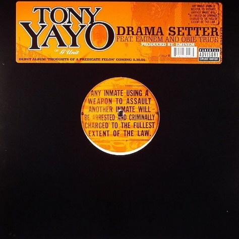
Tony Yayo feat. Eminem & Obie Trice
Produced by Eminem
Co-Produced by Luis Resto & Jeff Bass
Thoughts Of A Predicate Felon
August 30, 2005

The Notorious B.I.G. feat. Diddy, Eminem & Obie Trice
Produced by Eminem
Additional Production by Luis Resto
Duets: The Final Chapter
December 20, 2005

Trick Trick feat. Eminem & Proof
Produced by Eminem
Additional Production by Trick-Trick
The People Vs.
December 27, 2005
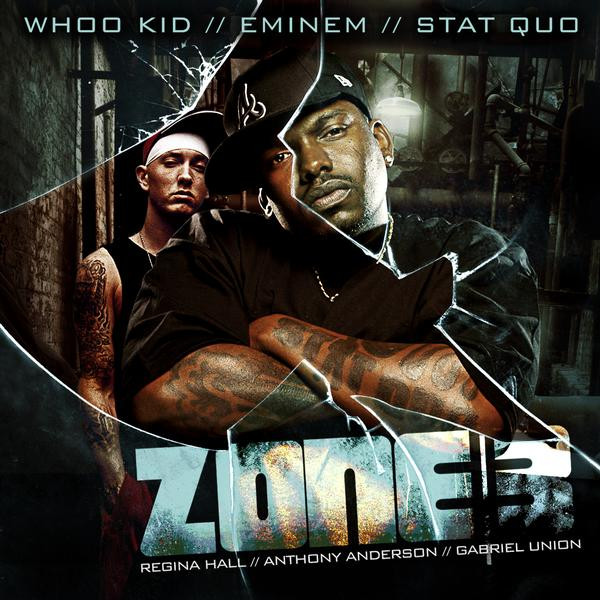
Stat Quo & DJ Whoo Kid feat. Eminem & Anthony Anderson
Produced by N/A
Zone 3 [Mixtape]
2005

Strike feat. Eminem & Dina Rae
Produced by Eminem
Unsportsmanlike Conduct [Mixtape]
2005
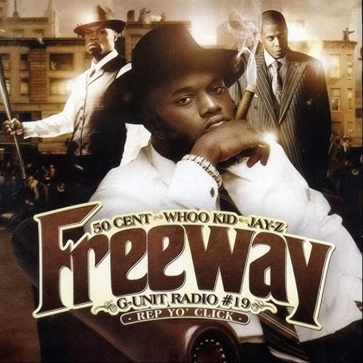
Freeway & DJ Whoo Kid feat. Eminem
Produced by N/A
G-Unit Radio 19: Freeway - Rep Yo’ Click [Mixtape]
April 2006

Parts Unknown
Produced by Denaun Porter
July 20, 2006
Recorded in 1997. Features verses by Eminem, Proof, and early D12 members Eye-Kyu and B-Flat.

Obie Trice
Produced by Eminem
Additional Production by Luis Resto
Second Round’s On Me
July 28, 2006
Although uncredited, Eminem performs on the chorus.
Obie Trice feat. Big Herk, Eminem & Trick Trick
Produced by Eminem
Additional Production by Luis Resto
Second Round’s On Me
July 28, 2006

Obie Trice
Produced by N/A
DJ Whoo Kid Presents: Bar Shots [Mixtape]
August 12, 2006
Obie Trice
Produced by N/A
DJ Whoo Kid Presents: Bar Shots [Mixtape]
August 12, 2006
Obie Trice
Produced by N/A
DJ Whoo Kid Presents: Bar Shots [Mixtape]
August 12, 2006
Obie Trice
Produced by N/A
DJ Whoo Kid Presents: Bar Shots [Mixtape]
August 12, 2006


Bizarre & Kuniva
Produced by Eminem
December 5, 2006
Although uncredited, Eminem performs on the chorus.
Proof
Produced by Eminem
December 5, 2006
This is a shortened, mastered version of “Oil Can Harry” by Proof featuring Eminem. Although uncredited on this version, the song contains the same Eminem vocals as the earlier version, along with additional intro vocals.
Nate Dogg, Eminem, Obie Trice & Bobby Creekwater
Produced by Eminem
Additional Production by Luis Resto
December 5, 2006


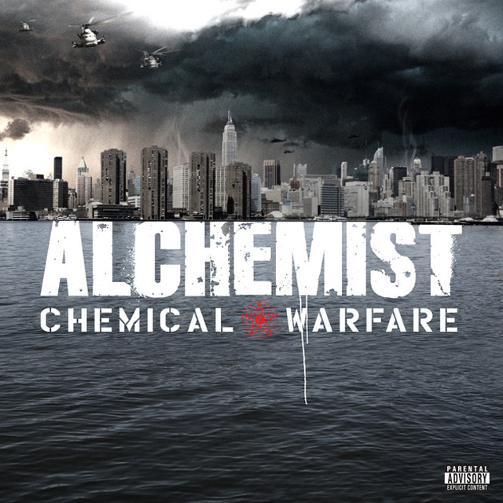
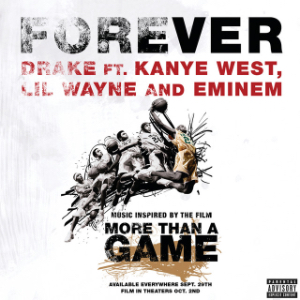
Drake feat. Kanye West, Lil Wayne & Eminem
More Than A Game (Soundtrack)
August 27, 2009
Later featured on Relapse: Refill, crediting all featured artists as main credit.


B.o.B. feat. Eminem & Hayley Williams
Produced by Alex da Kid
Additional Production by Eminem & Luis Resto
The Adventures Of Bobby Ray
April 17, 2010

-cover.jpg)

Lloyd Banks feat. Eminem
Produced by Boi-1da
Additional Production by Matthew Burnett
H.F.M. 2 (The Hunger For More 2)
November 22, 2010


Dr. Dre feat. Eminem & Skylar Grey
Produced by Alex da Kid
I Need A Doctor [Single]
February 1, 2011

Royce Da 5’9” feat. Eminem
Produced by Streetrunner & Sarom
Success Is Certain
March 29, 2011

Royce Da 5’9” feat. Eminem
Produced by DJ Premier
Success Is Certain
August 9, 2011
Only included on the album’s digital edition.

Yelawolf feat. Eminem & Gangsta Boo
Produced by WLPWR
Additional Production by Eminem
Radioactive
November 21, 2011
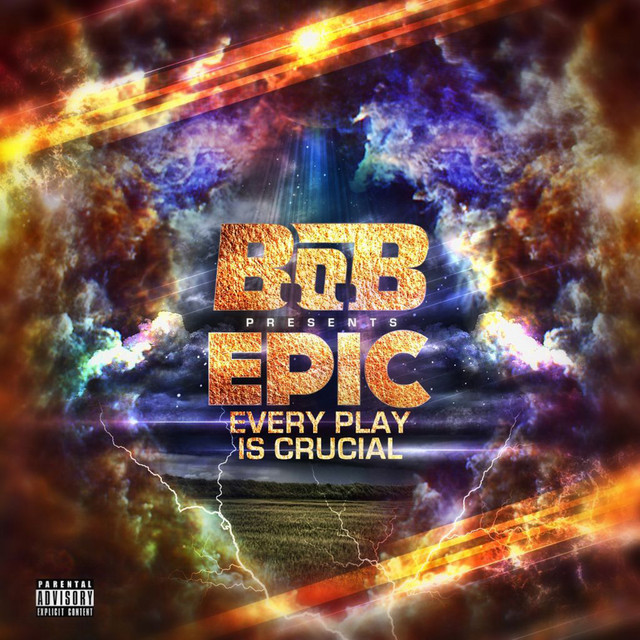
B.o.B. feat. Eminem
Produced by Sermstyle
E.P.I.C. (Every Play Is Crucial) [Mixtape]
November 28, 2011


Slaughterhouse feat. Eminem
Produced by T-Minus
Co-Produced by Eminem
Welcome To: Our House
August 21, 2012
Slaughterhouse feat. Eminem & Skylar Grey
Produced by Alex da Kid
Welcome To: Our House
August 28, 2012
Slaughterhouse feat. Eminem
Produced by Eminem
Additional Production by Luis Resto
Welcome To: Our House (Deluxe Edition)
August 28, 2012
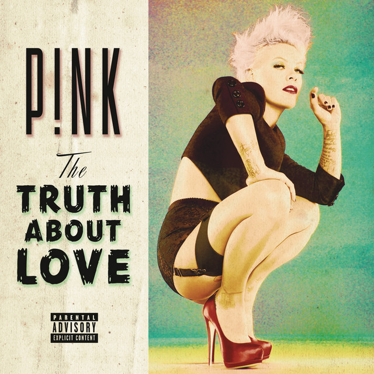
P!nk feat. Eminem
Produced by DJ Khalil & Chin Injeti
Additional Production by John Brown
The Truth About Love
September 17, 2012
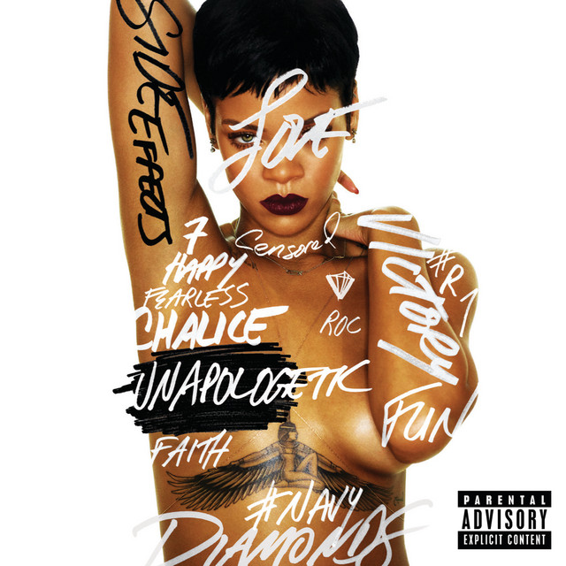
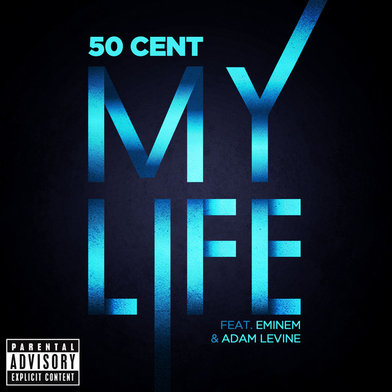

Skylar Grey feat. Eminem
Produced by Alex da Kid
Don’t Look Down
December 11, 2012
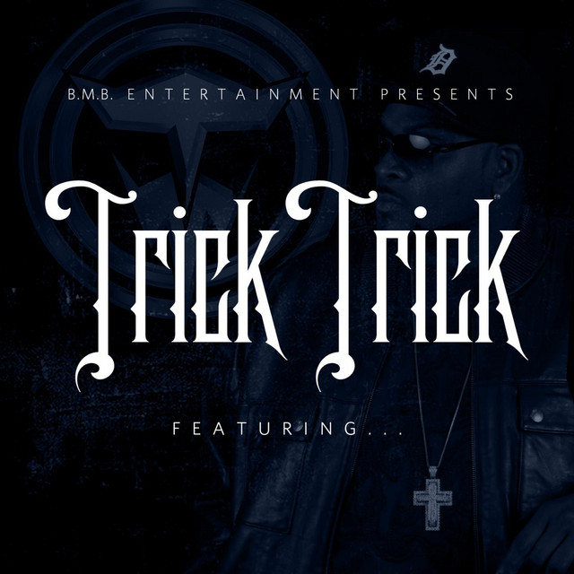
Trick Trick feat. Eminem & Kid Rock
Produced by DJ Thrilla Max
Featuring…
May 21, 2013

Tony Touch feat. Eminem
Produced by Eminem
The Piece Maker 3: Return Of The 50 MC’s
June 18, 2013

Busta Rhymes feat. Eminem
Produced by Scoop DeVille
Additional Production by Eminem
Calm Down: The Clash EP
July 1, 2014
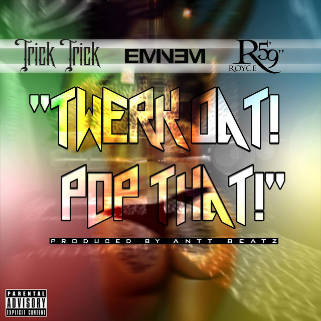
Trick Trick feat. Eminem & Royce Da 5’9”
Produced by Antt Beatz
Twerk Dat Pop That [Single]
July 4, 2014

Slaughterhouse feat. Eminem & Yelawolf
Produced by Boi-1da
Co-Produced by Just Blaze
SHADYXV
November 24, 2014
Skylar Grey, Eminem & Yelawolf
Produced by Eminem
Additional Production by Luis Resto
SHADYXV
November 24, 2014

-cover.jpg)
Tech N9ne feat. Eminem & Krizz Kaliko
Produced by Michael “Seven” Summers
Special Effects
May 4, 2015

Dr. Dre feat. Eminem, Candice Pillay & Anderson .Paak
Produced by Dem Jointz & Focus…
Compton
August 7, 2015
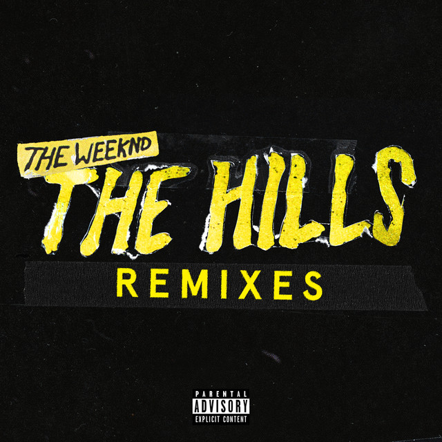
The Weeknd feat. Eminem
Produced by Mano & Illangelo
The Hills (Remixes) [Single]
October 11, 2015

D12 feat. Eminem
Produced by N/A
The Devil’s Night Mixtape (Reloaded)
October 31, 2015

Skylar Grey feat. Eminem
Produced by Eminem
Additional Production by Mark Batson & Mike Elizondo
Natural Causes
September 23, 2016
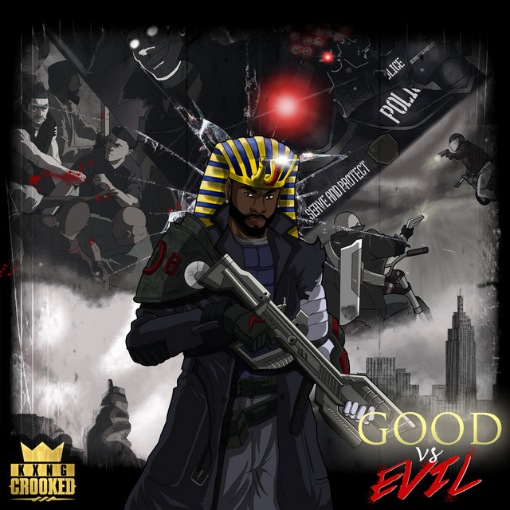
KXNG Crooked feat. Eminem & The Observer
Produced by Lavi$h
Good Vs. Evil
November 11, 2016
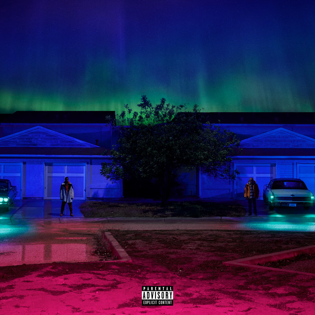
Big Sean feat. Eminem
Produced by Big Sean, FrancisGotHeat & Wondagurl
I Decided.
February 3, 2017
Royce Da 5’9” feat. Eminem & King Green
Produced by S1 & Epikh Pro
Book Of Ryan
May 3, 2018

Nicki Minaj feat. Eminem & Labrinth
Produced by Labrinth
Additional Production by Eminem
Queen
August 10, 2018
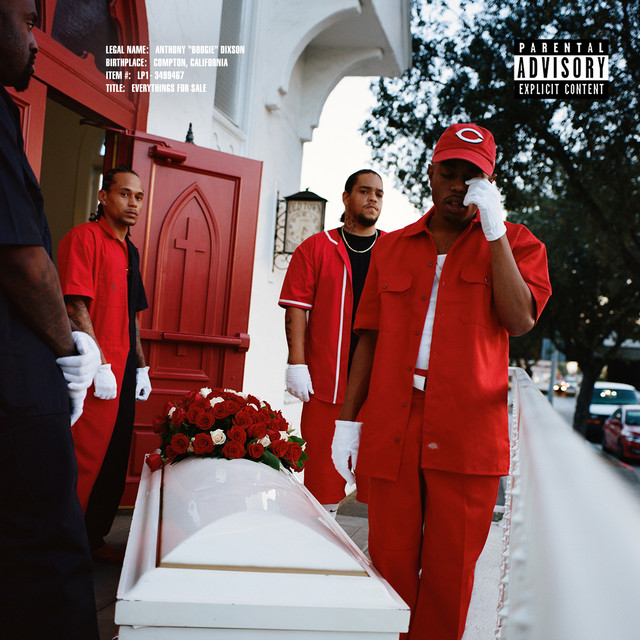
Westside Boogie feat. Eminem
Produced by Fresh Ayr, Gitty, Keyel, S1, Streetrunner & Tarik Azzouz
Everything’s For Sale
January 25, 2019

Logic feat. Eminem
Produced by Bregma
Co-Produced by Shroom
Confessions Of A Dangerous Mind
May 3, 2019
Ed Sheeran feat. Eminem & 50 Cent
Produced by Ed Sheeran, Fred again.., Max Martin & Shellback
No.6 Collaborations Project
July 12, 2019

Conway the Machine feat. Eminem
Produced by Beat Butcha & Daringer
Co-Produced by Eminem & Luis Resto
Bang [Single]
July 19, 2019

Griselda feat. Eminem
Produced by Beat Butcha & Daringer
Co-Produced by Eminem & Luis Resto
WWCD
November 29, 2019
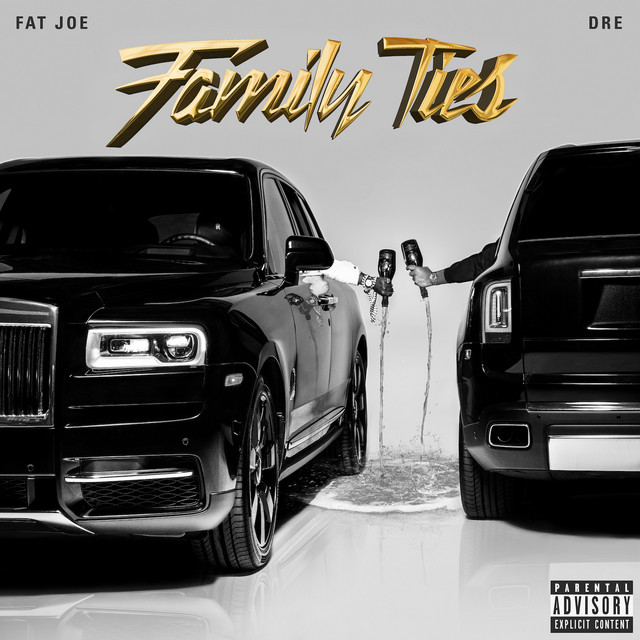
Fat Joe & Dre feat. Eminem & Mary J. Blige
Produced by Cool & Dre & 808 Ray
Family Ties
December 6, 2019


Jessie Reyez feat. Eminem
Produced by Bizness Boi & Tobias “Priest” Frelin
Additional Production by Eminem
Before Love Came to Kill Us
March 27, 2020

Kid Cudi feat. Eminem
Produced by J Gramm & Dot Da Genius
Co-Produced by Eminem
The Adventures Of Moon Man & Slim Shady [Single]
July 10, 2020
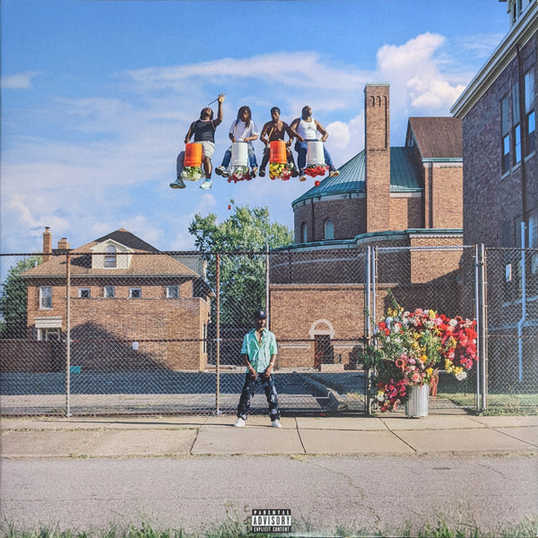
Big Sean feat. Tee Grizzley, Kash Doll, Cash Kidd, Payroll, 42 Dugg, Boldy James, Drego, Sada Baby, Royce Da 5’9” & Eminem
Produced by Helluva, Hit-Boy, Jay John Henry & Key Wane
Detroit 2
September 4, 2020

Nas feat. Eminem & EPMD
Produced by Hit-Boy
Additional Production by Eminem
King’s Disease II
August 5, 2021


Skylar Grey feat. Polo G, Mozzy & Eminem
Produced by d.a. got that dope, Danny Majic & Frank E
Last One Standing [Single]
September 30, 2021
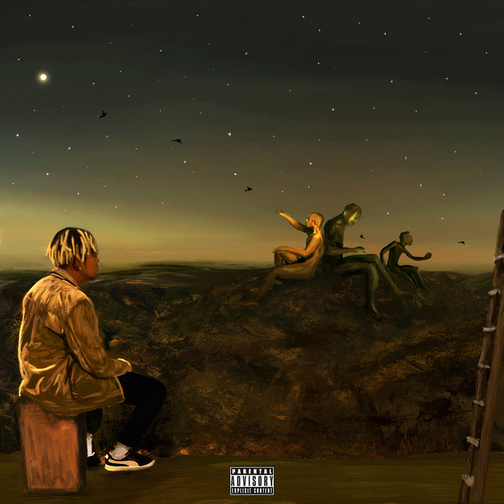
Cordae feat. Eminem
Produced by Cardiak, Nami & Kid Culture
From A Bird’s Eye View
January 14, 2022


DJ Khaled feat. Kanye West & Eminem
Produced by Dr. Dre & The ICU
God Did
August 25, 2022

Ez Mil feat. Eminem
Produced by Ez Mil
Additional Production by Eminem
DU4LI7Y: REDUX
August 4, 2023

Juice WRLD feat. Eminem & Benny Blanco
Produced by Benny Blanco, Cashmere Cat & Happy Perez
Co-Produced by Eminem
The Party Never Ends
December 16, 2023

Lyrical Lemonade feat. Eminem
Produced by Cole Bennett, Daniyel, John Nocito & Kosher World
Additional Production by Eminem
All Is Yellow
January 26, 2024

LL Cool J feat. Eminem
Produced by Q-Tip
Additional Production by Eminem
The FORCE
August 30, 2024

Snoop Dogg feat. 50 Cent & Eminem
Produced by Dr. Dre & C.S. Armstrong
Missionary
December 12, 2024
.jpg)
JID feat. Eminem
Produced by Eminem, Christo, Anca trio plus one & Eest
Additional Production by Luis Resto
God Does Like Ugly (The Preluxe) [EP]
July 4, 2025

Jack White feat. Eminem
Produced by N/A
Live At Ford Field [Single]
November 27, 2025